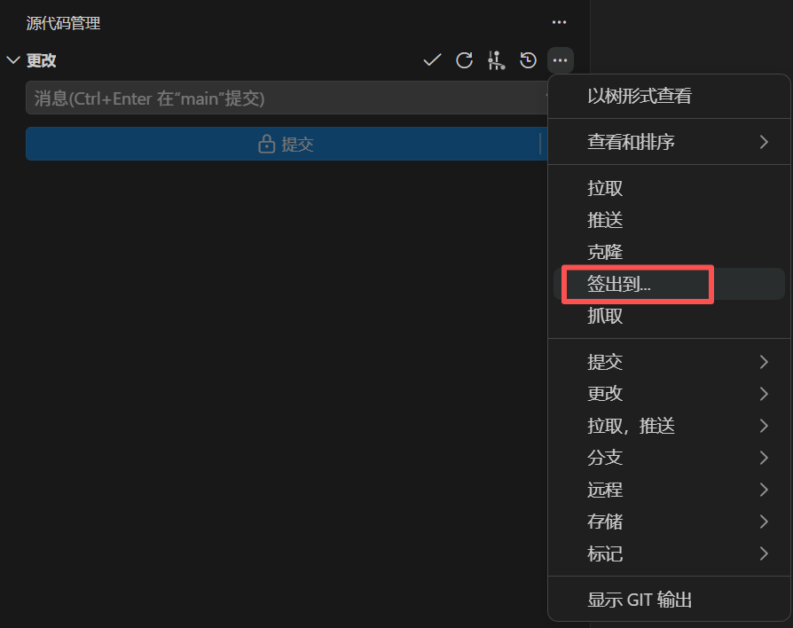
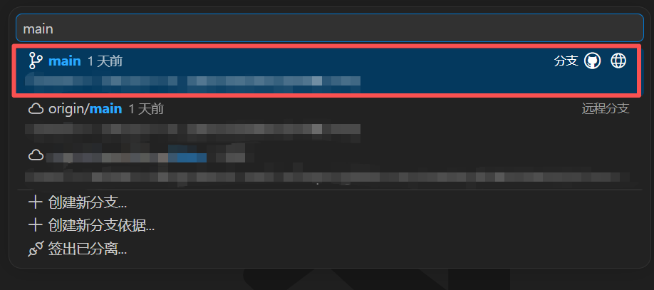
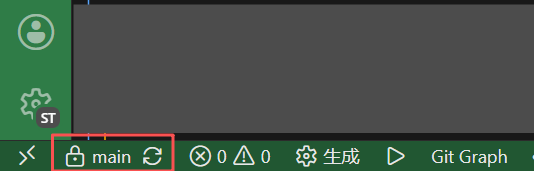
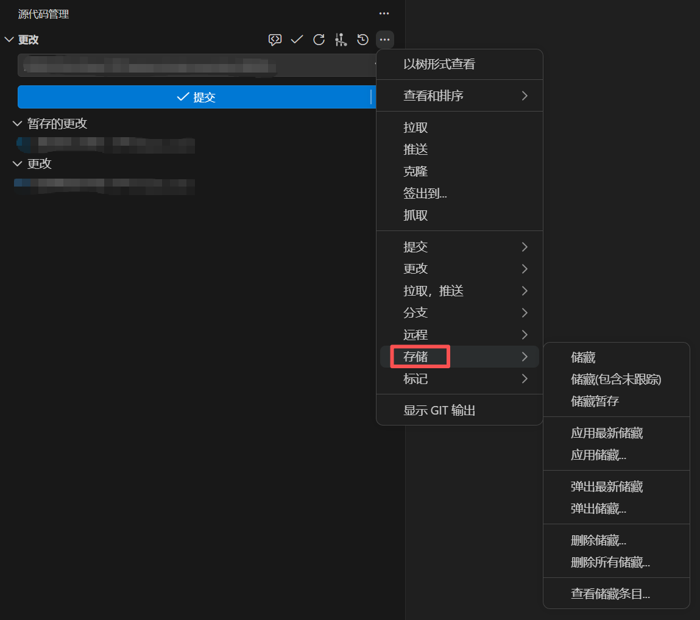
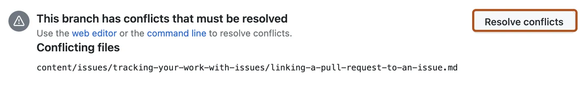
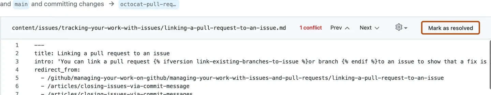
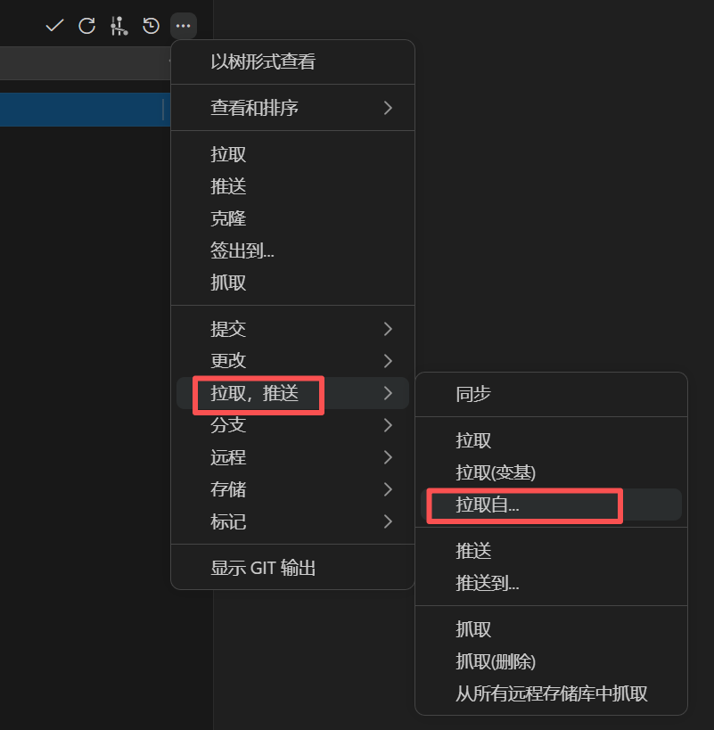

Q&A
分支是什么?
分支（Branch） 可以理解成一条平行的时间线。
Git 默认创建一条主分支（分支名通常是 main 或 master），上面串着项目从开始到现在的所有提交，就像一条珍珠项链。
当你准备开发新功能或修复问题时，可以从主分支"分叉"出一条新的开发分支：
- 在这条新分支上随意提交、修改、试验
- 不会影响到主分支上的代码
- 等开发完成、测试通过后，再把这条分支合并（Merge）回主分支
就像在平行宇宙里做实验——做砸了也不要紧，主宇宙毫发无损。
简单说：分支让你在不影响主线的情况下独立开发，开发完了再合并回去。
所有人的代码最终都会合并到主分支，必须保证这个主分支里的代码是最新的、编译通过的、功能正常的。
[!tip]
Git 的分支可以理解为项目开发道路上的一个个“路标”。
在 Git 中，每次提交都会形成一个版本节点。这些节点依次连接，就像一条不断延伸的道路。分支并不是把整个项目复制一份，而是在某个节点上放置一个带名字的路标，表示：“这条开发路线目前走到了这里。”
当我们在某个分支上提交代码时，路标会自动移动到最新的节点。例如，从
main创建feature/login分支后，两个路标（main，feature/login）最初位于同一点C。继续开发登录功能时，提交了D和E，道路向前延申，feature/login会随之前移动，而main留在原地C点。D──E <- feature/login / A──B──C <- main这里，
main分支的路标位于 C，feature/login分支的路标位于 E。Git 可以从分支路标所指的节点不断向前追溯，找到这条路线经过的提交，这些节点共同构成了这个分支的开发历史。只要某个节点的后续道路有路标，git就能找到这个节点。分支可以让新功能、问题修复和实验性修改相互隔离，也方便多人并行开发。即使一次尝试失败，通常也只需要放弃对应分支，不会破坏稳定的主分支。
提交是什么?
提交（Commit） 可以理解成打游戏时的存档点。
每次你执行"提交"，Git 就会把当前暂存区里的文件的"快照"保存下来。每个提交都包含：
- 一个独一无二的 ID（一串像
a1b2c3d的哈希值） - 作者是谁、什么时候提交的
- 一段提交信息，说明这次做了什么
正因为有提交，你才可以：
- 随时回到过去的任意一个存档点
- 对比两次存档之间的变化
- 出问题时，把代码回滚到之前的版本
简单说：提交就是给代码拍一张带说明的快照，是 Git 记录历史的基本单位。
Pull Request 是什么?
Pull Request（简称 PR，合并请求） 是 GitHub 提供的代码审查与合并机制。
当你在开发分支上完成了功能开发，不能直接把代码塞进主分支——而是要发起一个 PR，相当于说："我这边改好了，请审查一下，没问题的话合并到主分支。"
一个 PR 包含：
- 标题和描述 —— 告诉团队这个 PR 做了什么
- 文件变更对比 —— 展示这个分支改了哪些代码（绿色 = 新增，红色 = 删除）
- 审查与讨论 —— 团队成员可以在 PR 页面上逐行评论、提出问题
- 审查结论 —— Comment（评论）、Approve（批准）、Request Changes（请求修改）
审查通过后，点击合并，开发分支的代码就正式进入目标分支了。
简单说：PR 就是"请审查我的代码，然后合并"的请求，是团队协作的核心环节。
PR 不是 Git 的功能，是 GitHub 的功能。 Git 本身只有分支和合并，PR 是 GitHub 在 Git 之上附加的审查流程。
在 VS Code 里写代码、提交、推分支，在 GitHub 网页上发 PR、做审查——两边的分工大致就是这样。
怎么给分支起名字?
命名规则：
- 前缀 +
/+ 简短描述，全部使用小写英文和连字符- - 描述要有意义，让人一眼看出这分支在做什么
- 不要太长，5 个以内的单词比较合适
- 末尾不要加句号
| 前缀 | 用途 | 示例 |
|---|---|---|
feature/ |
新功能开发 | feature/login-page |
fix/ |
修复 bug | fix/user-avatar-crash |
refactor/ |
重构代码，不改功能 | refactor/api-routes |
chore/ |
杂项（依赖升级、配置调整等） | chore/upgrade-vue-3 |
docs/ |
只改注释/文档 | docs/api-readme |
✅ 好的命名：
feature/order-history
fix/payment-timeout
refactor/user-auth
❌ 不好的命名：
abc123 ← 看不出目的
my-branch ← 太模糊
feature/add-order-history-page-and-fix-bugs ← 太长，一个分支只做一件事
Fix/Login-Page ← 不应该用大写字母
[!TIP]
为什么要这样命名？
- 让所有人一眼看懂 —— 看到
fix/就知道这是个修复，看到feature/就知道是新功能。团队里其他人（包括你未来的自己）光看分支名就能理解意图。- 自动化和 CI/CD —— 很多团队的工具链会根据分支前缀自动触发不同的流水线。比如 push
fix/分支时自动跑测试，但只有 merge 到main才自动部署。- 分支列表一目了然 —— 项目做久了分支会很多，统一前缀能自动把分支按类别分组，方便清理和查找。
简单说：分支名是写给团队看的。名字清楚，沟通成本就低。
提交信息怎么写?
提交信息也有一套约定俗成的规范（Conventional Commits），和前文的分支命名很像，只是前缀略有不同。最常见的有：
| 前缀 | 含义 | 对应分支前缀 |
|---|---|---|
feat: |
新功能，新模块 | feature/ |
fix: |
修复 bug，修复问题 | fix/ |
refactor: |
重构代码，只改变代码，但表现出来的功能不变 | refactor/ |
chore: |
杂项（依赖、配置等） | chore/ |
docs: |
只改动了注释、文档 | docs/ |
格式：<前缀>: <简短的描述>。描述用中文写。
✅ 好的提交信息：
feat: 添加用户登录页面
fix: 修复头像加载超时问题
chore: 升级 vue 到 3.4 版本
❌ 不好的提交信息：
7月10日提交 ← 与修改内容无关
fix: 修复 bug ← 描述太笼统，不能看出具体修改
docs: 修复了头像加载超时问题 ← 搭配了错误的前缀
提交信息是写给团队和未来的自己看的——几个月后翻提交历史，一眼就能知道当时做了什么。
文件名旁边的字母是什么意思?
在源代码管理面板中，每个文件旁边都会有一个字母标记，表示它当前的状态：
| 状态标记 | 含义 | 说明 |
|---|---|---|
U |
Untracked（未追踪） | 新创建的文件，Git 还没开始追踪它。你需要先"暂存"（点击 ＋ ）Git 才会记录它的变更。 |
A |
Added / Staged（已暂存） | 新创建的文件已被暂存。提交后，Git 就会开始追踪这个文件。 |
M |
Modified（已修改） | 改动了 Git 已经追踪的文件。 |
D |
Deleted（已删除） | 删除了 Git 已经追踪的文件。 |
如何切换/签出到分支?
切换分支就是把当前的工作环境从一条分支换到另一条分支上。切换后，工作区里的文件会变成目标分支的样子。
（VS Code 里的 签出到... 功能可以简单理解为切换分支）
[!note]
切换分支前，确保当前工作区的修改都已经提交/暂存。
如果有未提交的改动，Git 可能会弹出警告，可以考虑先储藏再签出（参阅 储藏是什么? 怎么用?）。
通过 VS Code 切换
通过 VS Code 源代码管理面板中的"签出到"功能：
在面板顶部，找到当前分支名称的旁边，点击 "签出到..."（或类似的分支切换入口）。

在弹出的下拉列表中，选择你要切换到的分支。

VS Code 会自动切换分支，工作区中的文件会同步更新。
通过底部状态栏快速切换
VS Code 最底部有一行状态栏，显示的就是当前所在的分支名。点击它，相当于点击了【签出到...】，会弹出一个下拉列表，选择要切换到的分支即可。

储藏是什么? 怎么用?
储藏（Stash） 的作用是：把你当前工作区中还没提交的改动暂时存放到一边，让工作区恢复干净，等之后再取回来。
什么时候需要储藏？
- 正在写代码写了一半，突然需要切换到其他分支看个东西
- 不想把半成品提交到仓库，但又需要清空工作区
- 拉取代码前发现有未提交的改动，但不想直接提交
在 VS Code 的源代码管理面板中，点击顶部菜单栏的 "..."（更多操作），会看到 "存储"（Stash）相关的选项：

| 操作 | 说明 |
|---|---|
| 储藏（Stash） | 把所有未提交的改动保存起来，工作区恢复到没有更改的干净状态。储藏时会弹出一个输入框要求输入信息，用于给这个储藏备注，方便日后识别。 |
| 应用储藏（Apply Stash） | 把最近一次储藏的内容恢复到工作区，但保留这次储藏记录。适合想把同一份储藏应用到多个分支时用。 |
| 弹出储藏（Pop Stash） | 把最近一次储藏的内容恢复到工作区，同时删除这次储藏记录。最常用。 |
| 删除储藏（Drop Stash） | 直接删除某次储藏记录，不恢复内容。 |
| 查看储藏条目 | 可以看到所有已储藏的条目列表，点击某一条即可查看具体内容。 |
储藏可以有多条，像栈一样后进先出。
如果不再需要某次储藏，可以删除储藏来清理。
储藏不推送到远程仓库。它只存在你的本地，存在 .git 文件夹里。
如何处理冲突?
冲突发生在拉取（pull）或在 GitHub 上合并 PR 时，当两个人改了同一个文件的同一段代码，Git 不知道该保留谁的，就会停下来让你手动解决。
[!TIP]
冲突不是错误，是 Git 的保护机制。 它在保护你的代码不被别人意外覆盖。
处理冲突是日常开发中的正常操作，不用怕。
如果不确定该保留谁的代码，找写那行代码的同学一起确认。
当你遇到冲突时，冲突文件里会出现<<<<<<<、=======、>>>>>>>这样的标记：
<<<<<<< HEAD
// 这个区域显示的是你在当前分支上写的代码
=======
// 这个区域显示的是别人在目标分支上写的代码
>>>>>>> main
每行标记的意思：
| 标记 | 含义 |
|---|---|
<<<<<<< HEAD |
冲突开始标志。HEAD 表示你当前所在分支的版本 |
======= |
分隔线。上面是你的代码，下面是对方的代码 |
>>>>>>> main |
冲突结束标志。main 表示对方分支的名字，或者是提交的哈希值 |
如果冲突发生在 VS Code
- 打开有冲突的文件（有冲突的文件，文件名右侧会显示红色的感叹号）。
- 找到
<<<<<<<到>>>>>>>之间的区域（VS Code 会把冲突的段落高亮显示）。 - 根据实际情况，做三件事之一：
- 保留你的代码 —— 删掉对方的代码和所有标记行
- 保留对方的代码 —— 删掉你的代码和所有标记行
- 两者都保留 —— 手动调整代码，把两边的改动合并成最终版本，然后删掉所有标记行
- 保存文件。
- 在 VS Code 的源代码管理面板中，点击冲突文件旁边的 "＋" 暂存，然后按正常步骤提交。
如果冲突发生在 GitHub PR 合并时
PR 页面有如下的提示，点击 Resolve conflicts ，在网页端完成冲突处理。

[!note]
如果 Resolve conflicts 按钮是灰的，并且提示 "too complex to resolve on GitHub"，表示冲突太复杂了。
这种情况一般是这个 PR 的分支太久没有同步主分支导致的，可参阅 Q&A 我在开发分支里, 怎么把主分支的最新修改同步过来? 里的办法同步主分支，并处理冲突，然后再回到 PR 页面去合并。
找到
<<<<<<<到>>>>>>>之间的区域。根据实际情况，做三件事之一：
- 保留你的代码 —— 删掉对方的代码和所有标记行
- 保留对方的代码 —— 删掉你的代码和所有标记行
- 两者都保留 —— 手动调整代码，把两边的改动合并成最终版本，然后删掉所有标记行
点击 Mark as resolved 。

返回 PR 页面，继续完成合并操作。
如何处理 .ioc 文件的合并冲突?
.ioc 是 CubeMX 的项目文件。虽然它通过文本形式存储，但是奇怪的顺序和结构并不适合让人类和 Git 以及 AI来理解。
有时候明明正常修改，Git 也会认为有冲突。
即便全部应用当前更改/传入的更改，有时会把文件弄坏，导致 CubeMX 加载不了。遇到这种情况，可以尝试这样操作：
先记住自己想改什么配置，比如启用了哪个串口、开了哪个 DMA 等等。
提示需要处理合并冲突时，在项目目录下打开终端，运行：
git checkout --theirs -- **/*.ioc它的含义是，强制将项目所有目录下的
.ioc文件，全部替换为"对方"（传入的更改）的版本。这样做是为了保留其他同学的修改。关闭正在运行的 CubeMX。重新打开项目文件夹下的
.ioc文件。按照需求改配置。
保存，点 Generate Code。完成后，把相关文件的变更添加到暂存区（在 VS Code 源代码管理页面里点加号）。
处理完其余合并冲突后，点击源代码管理页面里的继续。
[!tip]
谨慎用 AI 处理
.ioc冲突，因为 AI 都不信任自己的（（：如果是普通代码（比如
.c、.h或 Python、JS 文件），AI 合并的可靠性相当高。但如果是
.ioc这种硬件配置文件，千万不要相信 AI 的合并，一信一个不吱声。AI 缺乏"硬件约束脑"
AI 只是一个文本概率模型，它并不真正懂得 STM32 的物理芯片架构。
- 逻辑冲突：你在 A 分支把
PA9设成了串口发送（TX），同学在 B 分支把PA9设成了普通输入（Input）。- AI 的盲区：AI 可能会为了"迎合"双方，把这两段配置文本都保留下来。但它不知道在物理上，一个引脚在同一时刻只能有一种功能。这种致命的硬件冲突，AI 是无法在文本层面感知到的。
.ioc格式对拼写和格式"零容忍"CubeMX 的
.ioc文件是给 CubeMX 软件看的，不是给人类看的。它里面有大量的内部临时 ID 和特定的缩排规则。
AI 在合并长文本时，极容易产生幻觉（Hallucination），可能会多删一个括号、写错一个外设代号（比如把
USART1误写成USART），或者漏掉某行关联配置。一旦格式有一丁点儿不合规，CubeMX 就会直接报 "Invalid File"（文件损坏），导致你之前所有的配置付之一炬。
……
——Gemini 的回答
我在开发分支里, 怎么把主分支的最新修改同步过来?
有时候在自己的开发分支里写到一半，同学的代码合并到了主分支，而我需要用他的代码。这种情况可以这样做：
签出到主分支，然后进行拉取，确保主分支是新的（参阅 1. 拉取主分支）。
[!note]
❓签出时，如果提示"签出会覆盖本地更改"，可以选择 储藏并签出。详见 Q&A 章节 储藏是什么? 怎么用? 。
签出到开发分支，然后点击【拉取自...】，在弹出的输入框里选择
main主分支（不是origin/main），目的是把主分支上别人新写的代码，同步/合并到 PR 的分支里来。
[!tip]
这不是唯一的解法。
在你熟悉 Git 各项操作后，可以尝试变基（Rebase）操作，把自己的开发分支"嫁接"到最新的主分支上。
但那样做是改写历史的操作，建议熟悉 Git 之后再尝试！